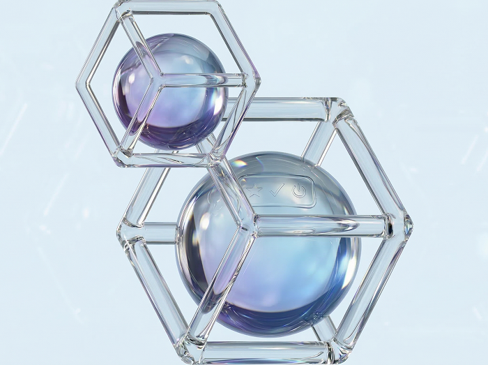
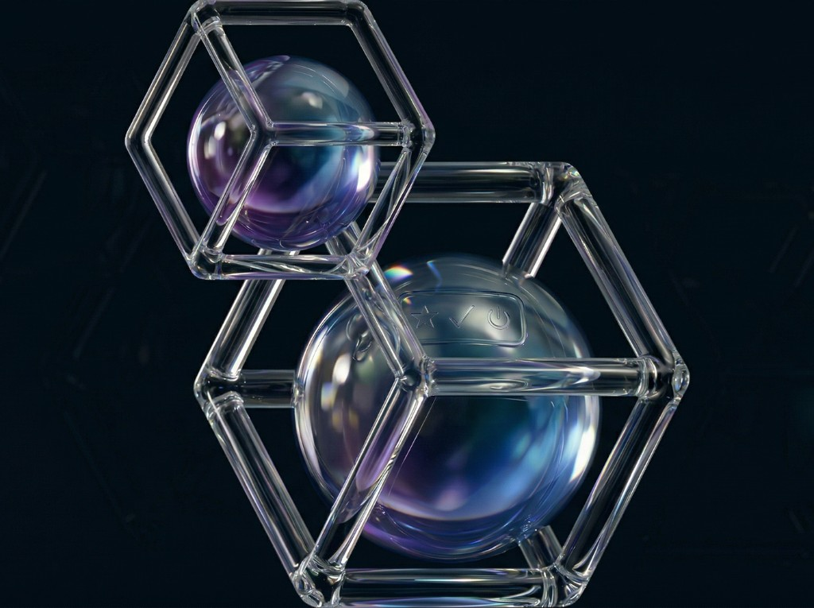

Physical and cognitive designs are key to understanding how people and AI systems share understanding, adapt to situations, and act meaningfully together. Grounded in embodied cognition, distributed cognition, and situated action, our research bridges theory and design to shape interactions that are intuitive, contextual, and genuinely collaborative.


Grounding HAX design in established cognitive science
What if intelligence isn't just in our heads? Distributed cognition argues that thinking happens across people, tools, environments, and artifacts — not in any single mind.
Key Concepts
Why this matters
In AI-augmented systems, cognition isn't just human or machine — it's distributed across both. Understanding this helps us design interfaces that support shared awareness, coordination, and collective intelligence.
In Designing agentic systems we consider cognitive processes to be distributed across human and AI agents working within the unified system. This helps us to conceptualize experiences that allow agents to seamlessly integrate into user workflows and interfaces that act as spaces of mutual sense-making and collaboration.


USE CASES
How distributed cognition principles helped transform complex graph data into intuitive, navigable interfaces.
Applying cognitive frameworks to simplify threat analysis and help analysts focus on what matters most.
How distributed cognition informs the design of collaborative multi-agent systems that work alongside human teams.
Cognition is shaped by context. Users rarely execute fixed plans all of the time—they adapt in real time to their surroundings, constraints, and evolving goals. Our agents are built to thrive in these fluid, unpredictable settings—sensing timing and environmental cues to provide assistance that feels natural, situationally aware, and attuned to the moment.
Key Concepts
Agents that improvise and adapt based on environment, timing, and social context—not rigid plans.




Why this matters
Intelligence emerges from ongoing interaction with dynamic contexts, not from executing predetermined plans. For designers, this means creating systems that remain open, adaptive, and responsive—shaping intelligence through interaction rather than instruction.
Thinking does not reside solely in the brain—it unfolds through movement, rhythm, and our engagement with space and tools. Cognition is embodied: it happens as we gesture, coordinate, and attune to the world around us. We design agentic systems that recognize these sensorimotor dimensions of thought—systems that seek to pick up on subtle cues of motion, rhythm, and spatial context to collaborate more intuitively with humans. Our current work explores agents capable of perceiving and responding to these embodied signals in real time, bridging the gap between mind, body, and machine.
Key Concepts
Thinking happens through the body—agents can respond to physical, spatial, and temporal cues.


Why this matters
Cognition extends beyond the brain into physical gestures, spatial arrangements, and temporal rhythms of interaction. When designing agents that interact with users in the real world, we must consider how these embodied and environmental dynamics shape meaning, attention, and action—ensuring that agents respond not just to words, but to movement, rhythm, and context as part of the cognitive process itself.
Use cases